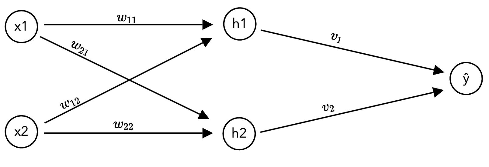
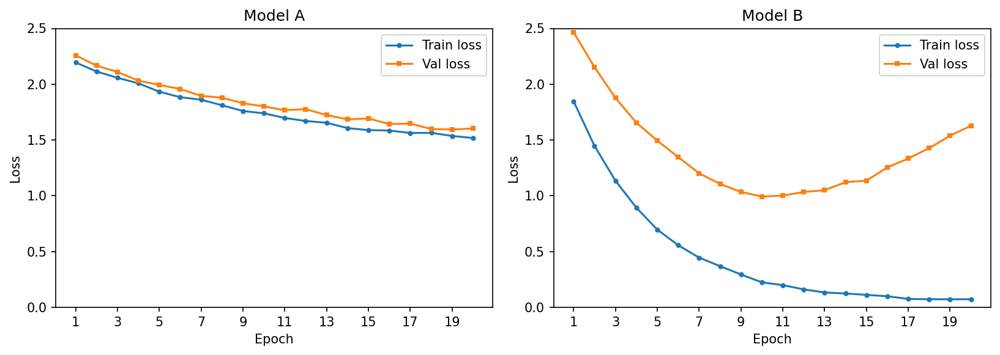

HW 4 part 1#
Neural Networks: Foundations
—TODO your name here
Collaboration Statement
TODO brief statement on the nature of your collaboration.
TODO your collaborator’s names here
Part 1 Table of Contents and Rubric#
Section |
Points |
|---|---|
Backpropagation and the chain rule |
1.75 |
PyTorch components |
1.75 |
Training loop concepts |
1 |
Total |
4.5 pts |
Notebook and function imports#
import numpy as np
import torch
import torch.nn as nn
# random number generator
rng = np.random.RandomState(42)
1. Backpropagation and the chain rule [1.75 pts]#
In Activity 15, we built a neural network and computed its forward pass: given inputs and weights, we compute predictions. Now we turn to the question of how neural networks learn: how do we compute the gradients needed for gradient descent?
In HW 1 and HW 2, we derived gradients for linear regression and logistic regression by hand. For neural networks with many layers and weights, we need a systematic approach. This is where the chain rule and backpropagation come in.
1.1 Chain rule warmup [0.5 pts]#
In HW 1, we computed \(\frac{\partial \mathcal{L}}{\partial w_j}\) for linear regression using the chain rule. In HW 2, we used the chain rule again to derive \(\frac{\partial \ell_{\log,i}}{\partial w_j}\) for logistic regression. Let’s refresh here with another chain rule example.
If \(L\) depends on \(a\), and \(a\) depends on \(w\), then the chain rule says:
The chain rule extends naturally to longer chains, if \(a\) also depends on \(z\) and \(z\) depends on \(w\):
Suppose we have the following chain of functions:
Compute \(\frac{dL}{dw}\) at \(w = 1\) by applying the chain rule. Fill in each step:
Your response:
Click to check your answer
\(z(1) = 2(1) + 1 = 3\). \(a = \text{ReLU}(3) = 3\). \(L = (3 - 3)^2 = 0\).
The partial derivatives: \(\frac{dL}{da} = 2(a - 3) = 2(3 - 3) = 0\), \(\frac{da}{dz} = 1\) (since \(z = 3 > 0\), the ReLU slope is 1), \(\frac{dz}{dw} = 2\).
The gradient is zero because \(L\) is already at its minimum with respect to \(a\): the prediction \(a = 3\) matches the target. A zero gradient means gradient descent won’t change \(w\), as we’ve already found the optimal value!
1.2 Backpropagation on a small network [0.75 pts]#
Now let’s apply the chain rule to a neural network. We’ll use the same notation from Activity 15: \(z\) for pre-activation values, \(h\) for post-activation (hidden) values, and \(\hat{y}\) for the output.
We’ll use a small network with 2 inputs, 2 hidden neurons (ReLU), and 1 output. The loss is squared error: \(\mathcal{L} = (\hat{y} - y)^2\):

The network computes:
where \(w_{k,j}\) is the weight from input \(x_j\) to hidden neuron \(h_k\), and \(v_k\) is the weight from \(h_k\) to the output.
Specific values for this exercise:
1.2.1 Compute the forward pass. Fill in each intermediate value:
Click to check your forward pass
\(z_1 = 0.5(1) + (-0.3)(2) = -0.1\)
\(z_2 = 0.2(1) + 0.8(2) = 1.8\)
\(h_1 = \text{ReLU}(-0.1) = 0\), so ReLU zeroed out this neuron!
\(h_2 = \text{ReLU}(1.8) = 1.8\)
\(\hat{y} = 0.6(0) + 0.4(1.8) = 0.72\)
\(\mathcal{L} = (0.72 - 1)^2 = 0.0784\)
1.2.2 Now compute the gradient of the loss with respect to \(w_{2,1}\) (the weight from input \(x_1\) to hidden neuron \(h_2\)). The chain rule gives us:
Compute each term:
Then put it all together for the backwards pass:
Hint
Use the values from 1.2.1. For \(\frac{\partial h_2}{\partial z_2}\): what is the derivative of \(\text{ReLU}(z)\) when \(z > 0\)?
1.2.3 Now consider \(w_{1,1}\) (the weight from \(x_1\) to hidden neuron \(h_1\)). Without doing the full computation, what is \(\frac{\partial \mathcal{L}}{\partial w_{1,1}}\)? Briefly explain why.
Your response: TODO
Hint
Look at the value of \(z_1\) you computed in 1.2.1, and then consider what \(\frac{\partial h_1}{\partial z_1}\) for this particular value.
2. PyTorch Components [1.75 pts]#
In class, we built a neural network using nn.Sequential, nn.Linear, and nn.ReLU and verified our forward pass by hand. In this section, we’ll build three reusable functions that modularize the training workflow:
build_model(): construct annn.Sequentialfrom a list of layer sizestrain_one_step(): perform one gradient descent stepevaluate(): compute loss and accuracy without updating weights
These three functions will be the building blocks for the training loop you’ll write in Part 2.
2.1 build_model() [0.5 pts]#
Let’s generalize the model construction we have seen in class into a reusable function. build_model() constructs an nn.Sequential with ReLU activations between each pair of layers, and optional dropout for regularization.
Dropout
Dropout is a regularization technique that randomly “turns off” a random fraction of neurons during each training step, preventing the network from relying too heavily on any single neuron. It’s specified by a probability p. For example, p=0.2 means each neuron is dropped with probability 0.2. When dropout_rate > 0, add an nn.Dropout(p=dropout_rate) layer after each nn.ReLU. We’ll explore its effect in Part 2.
def build_model(
input_size: int,
hidden_sizes: list[int],
output_size: int,
dropout_rate: float = 0.0,
) -> nn.Sequential:
"""Build a feedforward neural network with ReLU activations.
Constructs an nn.Sequential model with the following pattern for each
hidden layer: Linear -> ReLU -> (optional Dropout). The final layer
is a plain Linear layer with no activation.
Args:
input_size: number of input features
hidden_sizes: list of hidden layer sizes, e.g. [128, 64]
output_size: number of output classes
dropout_rate: dropout probability (0.0 means no dropout)
Returns:
An nn.Sequential model
"""
layers = []
prev_size = input_size
# TODO: iterate over hidden_sizes, and for each hidden size h:
for h in hidden_sizes:
# TODO: append nn.Linear to the layers list from prev_size to h
pass
# TODO: append nn.ReLU() to the layers list
# TODO: if dropout_rate > 0, append nn.Dropout(p=dropout_rate) to the layers list
# TODO: update prev_size to h
prev_size = None
# TODO: append the final nn.Linear from prev_size to output_size for the output layer
# Return the model as a nn.Sequential with the layers built
return nn.Sequential(*layers)
if __name__ == "__main__":
# Test 1: basic architecture, check parameter count
model1 = build_model(784, [128, 64], 9)
n_params = sum(p.numel() for p in model1.parameters())
assert n_params == 109321, f"Expected 109321 parameters, got {n_params}"
print(f"Test 1 passed: {n_params:,} parameters")
# Test 2: with dropout — should have 2 Dropout layers
model2 = build_model(784, [128, 64], 9, dropout_rate=0.2)
dropout_layers = [m for m in model2.modules() if isinstance(m, nn.Dropout)]
assert len(dropout_layers) == 2, f"Expected 2 Dropout layers, got {len(dropout_layers)}"
print(f"Test 2 passed: found {len(dropout_layers)} Dropout layers")
# Test 3: single hidden layer
model3 = build_model(10, [5], 2)
n_params3 = sum(p.numel() for p in model3.parameters())
# Linear(10, 5): 10*5 + 5 = 55. Linear(5, 2): 5*2 + 2 = 12. Total: 67
assert n_params3 == 67, f"Expected 67 parameters, got {n_params3}"
print(f"Test 3 passed: {n_params3} parameters")
print("\nAll build_model tests passed!")
2.2 train_one_step() [0.75 pts]#
Now let’s implement a single gradient descent step. In HW 1, you wrote linreg_grad_update which manually computed gradients and updated weights. In PyTorch, the same process happens through three operations:
Forward pass: compute predictions and loss
Backward pass:
loss.backward()computes all gradients automatically using backpropagationOptimizer step:
optimizer.step()updates all weights using the computed gradients
One important detail: we also need to call optimizer.zero_grad() before the forward pass to clear gradients from the previous step, as PyTorch is always tracking gradients by default.
Connecting to Section 1
loss.backward() is doing exactly the forward-backward computation we analyzed in 1.3: it computes all partial derivatives by reusing intermediate values, avoiding the computational expense of calculating each gradient independently.
def train_one_step(
model: nn.Module,
X_batch: torch.Tensor,
y_batch: torch.Tensor,
loss_fn: nn.Module,
optimizer: torch.optim.Optimizer,
) -> float:
"""Perform one gradient descent step: forward, loss, backward, update.
Args:
model: the neural network model
X_batch: input features for this batch, shape (batch_size, input_size)
y_batch: target labels for this batch, shape (batch_size,)
loss_fn: the loss function (e.g., nn.CrossEntropyLoss())
optimizer: the optimizer (e.g., torch.optim.SGD or Adam)
Returns:
The loss value
"""
# TODO: zero out the gradients to reset them for this gradient descent step
# TODO: the forward pass through the model to compute predictions
y_pred = None
# TODO: compute the loss using loss_fn
loss = None
# TODO: the backward pass to compute all gradients via backpropagation
# TODO: Take one step of gradient descent with the optimizer
# Returns the loss as a Python float using .item()
return loss.item()
if __name__ == "__main__":
torch.manual_seed(42)
model_test = build_model(4, [8], 3)
X_test_batch = torch.randn(16, 4)
y_test_batch = torch.randint(0, 3, (16,))
loss_fn = nn.CrossEntropyLoss()
optimizer = torch.optim.SGD(model_test.parameters(), lr=0.01)
loss1 = train_one_step(model_test, X_test_batch, y_test_batch, loss_fn, optimizer)
assert isinstance(loss1, float), f"Loss should be a float, got {type(loss1)}"
assert loss1 > 0, f"Loss should be positive, got {loss1}"
loss2 = train_one_step(model_test, X_test_batch, y_test_batch, loss_fn, optimizer)
assert isinstance(loss2, float), f"Loss should be a float, got {type(loss2)}"
print(f"Loss after step 1: {loss1:.4f}")
print(f"Loss after step 2: {loss2:.4f}")
print("train_one_step tests passed!")
2.3 evaluate() [0.5 pts]#
Finally, we need a function to evaluate our model’s performance on a validation or test set without updating the weights. We need two key PyTorch idioms:
model.eval(): switches off behaviors that only make sense during training (like dropout)torch.no_grad(): disables gradient tracking since we don’t need gradients during evaluation (saves memory)
def evaluate(
model: nn.Module,
X: torch.Tensor,
y: torch.Tensor,
loss_fn: nn.Module,
) -> tuple:
"""Evaluate model: returns (loss, accuracy) without updating weights.
Args:
model: the neural network model
X: input features, shape (n, input_size)
y: target labels, shape (n,)
loss_fn: the loss function
Returns:
(loss, accuracy) as a tuple of scalars
"""
model.eval() # disable dropout
with torch.no_grad(): # tells PyTorch to not track gradients
# TODO: compute predictions by passing X through the model
y_pred = None
# TODO: compute the loss
loss = None
# TODO: compute predicted classes using argmax
predicted_classes = None
# TODO: compute accuracy as the fraction of correct predictions
accuracy = None
return loss, accuracy
if __name__ == "__main__":
torch.manual_seed(42)
model_eval = build_model(4, [8], 3)
X_eval = torch.randn(100, 4)
y_eval = torch.randint(0, 3, (100,))
loss_fn_eval = nn.CrossEntropyLoss()
loss, acc = evaluate(model_eval, X_eval, y_eval, loss_fn_eval)
assert 0 <= acc <= 1, f"Accuracy should be between 0 and 1, got {acc}"
assert loss > 0, f"Loss should be positive, got {loss}"
print(f"Evaluation loss: {loss:.4f}")
print(f"Evaluation accuracy: {acc:.3f}")
3. Training Loop Concepts [1 pt]#
In Part 2, you’ll write a full training loop using the functions from Section 3. Let’s practice again with the training loop concepts needed: mini-batches, epochs, and DataLoaders.
3.1 Mini-batch gradient descent [0.5 pts]#
In HW 1, your linreg_grad_descent computed the gradient using all \(n\) training examples at every step. This is the batch gradient descent approach we discussed in lectures 4-5. For large neural networks with millions of examples, computing one gradient over the full dataset is too expensive.
Instead, we use mini-batch gradient descent: at each step, we compute the gradient on a small batch of \(b\) examples. Each complete pass through the training set is called an epoch. Within each epoch, the PyTorch DataLoader class divides the data into mini-batches and shuffles them.
if __name__ == "__main__":
from torch.utils.data import DataLoader, TensorDataset
# Preview: how DataLoader works
X_preview = torch.randn(100, 4)
y_preview = torch.randint(0, 3, (100,))
dataset = TensorDataset(X_preview, y_preview)
train_loader = DataLoader(dataset, batch_size=32, shuffle=True)
print(f"Dataset size: {len(dataset)} examples")
print(f"Number of batches per epoch: {len(train_loader)}")
print()
# Peek at one batch
X_batch_preview, y_batch_preview = next(iter(train_loader))
print(f"Batch X shape: {X_batch_preview.shape}")
print(f"Batch y shape: {y_batch_preview.shape}")
3.1.1 Suppose we have \(n = 1024\) training examples and a batch size of \(b = 64\).
How many gradient updates (calls to train_one_step) happen in one epoch?
Your response: TODO
If we train for 10 epochs, how many total gradient updates happen if we use a batch size of \(b = 64\)?
Your response: TODO
Compare this to 10 steps of full-batch gradient descent (\(b = n = 1024\)). How many total gradient updates would that be? Discuss which approach you think would learn more effectively when training a model on a large dataset.
Your response: TODO
3.1.2 What are some trade-offs between using a smaller batch size (e.g., \(b = 16\)) versus a larger batch size (e.g., \(b = 512\))? Think back to our discussion of batch vs mini-batch vs stochastic gradient descent in lecture 4 and lecture 5, and also consider the number of gradient updates per epoch. It is okay to speculate here, as this is an open-ended question.
Your response: TODO
3.2 Reading train and validation loss curves [0.5 pts]#
When training a neural network, we track both training loss (on the data the model is being trained on) and validation loss (on held-out data the model hasn’t seen). The relationship between these two curves tells us whether our model is learning well.
Here is a preview of the training loop structure you’ll complete in Part 2:
for epoch in range(n_epochs):
for X_batch, y_batch in train_loader: # iterate over mini-batches
train_one_step(model, X_batch, y_batch, loss_fn, optimizer)
val_loss, val_acc = evaluate(model, X_val, y_val, loss_fn)
3.2.1 The plots below show train and validation loss curves over 20 epochs for two models trained on the same dataset. Examine each plot and diagnose whether you observe underfitting, overfitting, or a good fit. Explain your reasoning in 1-2 sentences.

Model A diagnosis: TODO
Model B diagnosis: TODO
3.2.2 Based on the plots above, describe what pattern in the train vs. validation loss curves would indicate that a model is performing well. What would you look for to decide when to stop training?
Your response: TODO
How to submit
Follow the instructions on the course website to submit your work. For part 1, you will submit hw4_foundations.ipynb and hw4_foundations.py.